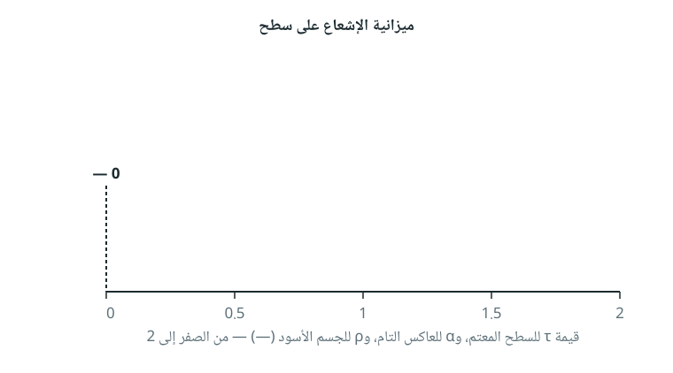

ميزانية الإشعاع على سطح
Radiation Balance at a Surface
كل إشعاع يصل إلى سطح يُقسَّم بين امتصاص وانعكاس ونفاذ، ومجموع الأجزاء واحد؛ ومن هذا التقسيم تُحسب حرارة السطح في التوازن.
ميزانية الإشعاع على سطح تنص على أن الطاقة الإشعاعية الواردة تُقسم إلى ثلاثة أجزاء لا رابع لها: ما يمتصه السطح α، وما يعكسه ρ، وما ينفذه τ، ومجموعها يساوي الواحد: α + ρ + τ = 1. وتُطبَّق هذه الميزانية عند طول موجي محدد، فالسطح قد يمتص معظم الإشعاع الشمسي قصير الموجة ويعكس معظم الإشعاع الأرضي طويل الموجة، وهذا التفاوت الطيفي هو ما يفسّر الأثر الدفيئي في الزجاج الذي ينفذ الضوء المرئي ويكاد لا ينفذ ما فوق 2500 نانومتر. والحرارة تستقر حين يتساوى الوارد الممتص مع الصادر: α·G = ε·σ·T⁴، ومن هذه المعادلة تُحسب حرارة التوازن لأي سطح معرَّض للشمس. ويعرض Janna الميزانية بالمعادلة (11.26a) وحالاتها الخاصة، ويعرض Çengel الصيغة نفسها في سياق الإشعاع الشمسي.
كيف تعمل الظاهرة؟
تصل الفوتونات إلى السطح فتتفاعل مع إلكترونات المادة: جزء يُهيّجها فيتحول إلى حرارة داخلية (امتصاص)، وجزء يُعاد إشعاعه بالطول الموجي نفسه (انعكاس)، وجزء يعبر المادة (نفاذ). والطاقة الممتصة ترفع حرارة السطح فيزداد إشعاعه الصادر وفق ستيفان–بولتزمان حتى يتساوى الممتص مع الصادر، وعندها يستقر السطح على حرارة توازن. والانتقائية الطيفية هي ما يصنع الفرق العملي: الزجاج ينفذ نحو 0.8 من الضوء المرئي ويكاد لا ينفذ ما فوق 2500 نانومتر، فيدخل الإشعاع الشمسي ويُحبَس الإشعاع الأرضي تحته.
العلاقة بالأرقام
الميزانية α + ρ + τ = 1 تُطبَّق على مستوى طيفي، وقيمها الجدولية تُقاس لطيف محدد. عمليًّا: سطح α = 0.9 وτ = 0 يعكس ρ = 0.1؛ وتحت شمس 1000 واط/م² يمتص 900 واط/م² ويعكس 100 واط/م². وفي التوازن α·G = ε·σ·T⁴، وبأخذ σ = 5.67×10⁻⁸ واط/(م²·كلفن⁴) وε = 0.9: T⁴ = 900/(0.9×5.67×10⁻⁸) = 1.763×10¹⁰ كلفن⁴، فـT = 364.4 كلفن أي 91.3 °م. ولو كان α = 0.2 بالانبعاثية نفسها: T⁴ = 200/(0.9×5.67×10⁻⁸) = 3.919×10⁹، فـT = 250.2 كلفن أي −22.9 °م.
مفاهيم متقاربة
الميزانية توزّع الإشعاع الوارد، وقانون كيرشوف يربط الامتصاص بالإصدار عند الطول الموجي نفسه، وستيفان–بولتزمان يحدد مقدار الإصدار. وليست الميزانية «الامتصاصية الشمسية» وحدها: السطح قد يكون α = 0.9 للشمس وε = 0.05 للأشعة تحت الحمراء، وهذان رقمان لميزانيتين طيفيتين مختلفتين، ولا يجوز جمعهما في معادلة واحدة بلا تصريح بالنطاق الذي قيسا فيه.
حدود التطبيق
تنكسر الميزانية حين لا يكون السطح حدًّا صرفًا: الأجسام نصف الشفافة كالزجاج السميك والغازات تمتص على طول المسار لا على السطح، فتحتاج معادلة الانتقال الإشعاعي لا α + ρ + τ = 1. وتنكسر أيضًا إذا تغيّرت الخصائص بالحرارة أو بزاوية السقوط، فالقيم الجدولية تُقاس عند زاوية وطيف محددين. وفي وجود حمل وتوصيل مع الإشعاع لا تكون حرارة السطح حرارة التوازن الإشعاعي، بل ناتج الميزانية الحرارية الكاملة.

| الكمية | القيمة | المصدر |
|---|---|---|
| ثابت ستيفان–بولتزمان σ | 5.67×10⁻⁸ واط/(م²·كلفن⁴) | [2] |
| مجموع أجزاء ميزانية السطح | 1 بلا وحدة | [1] |
| نفاذية السطح المعتم | 0 بلا وحدة | [1] |
| حرارة التوازن لسطح α = 0.9 وε = 0.9 | 364.4 كلفن | [2] |
| حرارة التوازن لسطح α = 0.2 وε = 0.9 | 250.2 كلفن | [2] |
المصادر
- 1 Engineering Heat Transfer, 3rd ed. — CRC Press (2009). · اطُّلع عليه 2026-11-26
- 2 University Physics Volume 2 — §1.6 Mechanisms of Heat Transfer — OpenStax (Rice University) (2016). openstax.org/books/university-physics-volume-2/pages/1-6-mechanisms-of-heat-transfer · اطُّلع عليه 2026-11-26
استشهد بهذا المصطلح
الصيغتان مبنيتان من بيانات الصفحة نفسها: العنوان والتاريخ ورابط النسخة المنشورة.
ميزانية الإشعاع على سطح — Radiation Balance at a Surface. (2026). ديوان المعرفة — انفراد. https://infiradev.com/diwan/terms/term-radiation-balance.html
@misc{term-radiation-balance2026,
title = {ميزانية الإشعاع على سطح},
titleaddon = {Radiation Balance at a Surface},
howpublished = {{ديوان المعرفة — انفراد} — مرجع علمي عربي},
year = {2026},
url = {https://infiradev.com/diwan/terms/term-radiation-balance.html},
urldate = {2026-11-26},
note = {مراجعة علمية: hermes — مراجعة آلية بالتكليف 2026-11-26}
}
راجعه: hermes — مراجعة آلية بالتكليف 2026-11-26 · 2026-11-26 · آخر تحديث 2026-11-26